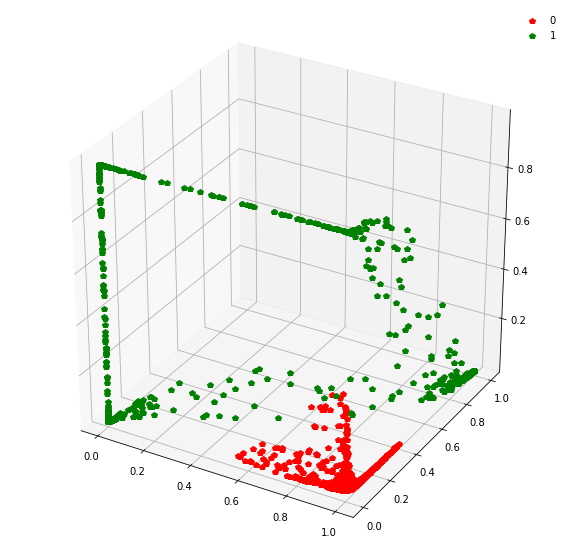
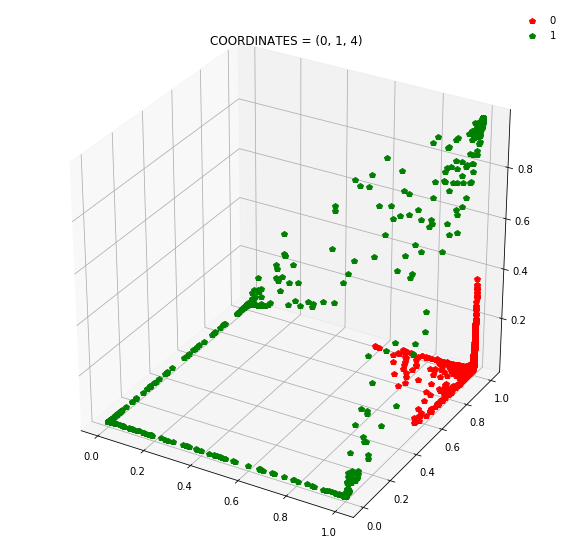
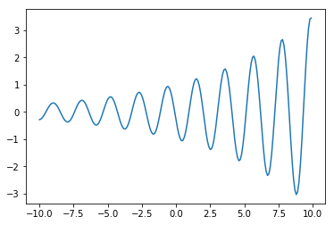

Using Toy Examples to Understand Simple Neural Networks
%load_ext autoreload
%autoreload 2
%matplotlib inline
import torch
import torch.nn as nn
import torch.optim as optim
import matplotlib.pylab as plt
import pandas as pd
import numpy as np
from sklearn.neural_network import MLPClassifier, MLPRegressor
import copy
device = torch.device("cuda:0" if torch.cuda.is_available() else "cpu")
print(device)
cpu
Goals of this notebook
We want to introduce the basics of neural networks and deep learning. Modern deep learning is a huge field and it’s impossible to cover even all the significant developments in the last 5 years here. But the basics are straightforward.
One big caveat: deep learning is a rapidly evolving field. There are new developments in neural network architectures, novel applications, better optimization techniques, theoretical results justifying why something works etc. daily. It’s a great opportunity to get involved if you find research interesting and there are great online communities (pytorch, fast.ai, paperswithcode, pysyft) that you should get involved with.
Note: Unlike the previous notebooks, this notebook has very few questions. You should study the code, tweak the data, the parameters, and poke the models to understand what’s going on.
Synthetic/Artificial Datasets
We covered the basics of neural networks in the lecture. We also saw applications to two synthetic datasets. The goal in this section is to replicate those results and get a feel for using pytorch.
Classification
def generate_binary_data(N_examples=1000, seed=None):
if seed is not None:
np.random.seed(seed)
features = []
target = []
for i in range(N_examples):
#class = 0
r = np.random.uniform()
theta = np.random.uniform(0, 2*np.pi)
features.append([r*np.cos(theta), r*np.sin(theta)])
target.append(0)
#class = 1
r = 3 + np.random.uniform()
theta = np.random.uniform(0, 2*np.pi)
features.append([r*np.cos(theta), r*np.sin(theta)])
target.append(1)
features = np.array(features)
target = np.array(target)
return features, target
features, target = generate_binary_data(seed=100)
def plot_binary_data(features, target):
plt.figure(figsize=(10,10))
plt.plot(features[target==0][:,0], features[target==0][:,1], 'p', color='r', label='0')
plt.plot(features[target==1][:,0], features[target==1][:,1], 'p', color='g', label='1')
plt.xlabel('x')
plt.ylabel('y')
plt.legend()
plot_binary_data(features, target)

We have two features here - x and y. There is a binary target variable that we need to predict. This is essentially the dataset from the logistic regression discussion. Logistic regression will not do well here given that the data is not linearly separable. Transforming the data so we have two features:
and
would make it very easy to use logistic regression (or just a cut at $r = 2$) to separate the two classes but while it is easy for us to visualize the data and guess at the transformation, in high dimensions, we can’t follow the same process.
Let’s implement a feed-forward neural network that takes the two features as input and predicts the probabiliy of being in class 1 as output.
Architecture Definition
class ClassifierNet(nn.Module): #inherit from nn.Module to define your own architecture
def __init__(self, N_inputs, N_outputs, N_hidden_layers, N_hidden_nodes, activation, output_activation):
super(ClassifierNet, self).__init__()
self.N_inputs = N_inputs #2 in our case
self.N_outputs = N_outputs #1 in our case but can be higher for multi-class classification
self.N_hidden_layers = N_hidden_layers #we'll start by using one hidden layer
self.N_hidden_nodes = N_hidden_nodes #number of nodes in each hidden layer - can extend to passing a list
#Define layers below - pytorch has a lot of layers pre-defined
#use nn.ModuleList or nn.DictList instead of [] or {} - more explanations below
self.layer_list = nn.ModuleList([]) #use just as a python list
for n in range(N_hidden_layers):
if n==0:
self.layer_list.append(nn.Linear(N_inputs, N_hidden_nodes))
else:
self.layer_list.append(nn.Linear(N_hidden_nodes, N_hidden_nodes))
self.output_layer = nn.Linear(N_hidden_nodes, N_outputs)
self.activation = activation #activations at inner nodes
self.output_activation = output_activation #activation at last layer (depends on your problem)
def forward(self, inp):
'''
every neural net in pytorch has its own forward function
this function defines how data flows through the architecture from input to output i.e. the forward propagation part
'''
out = inp
for layer in self.layer_list:
out = layer(out) #calls forward function for each layer (already implemented for us)
out = self.activation(out) #non-linear activation
#pass activations through last/output layer
out = self.output_layer(out)
if self.output_activation is not None:
pred = self.output_activation(out)
else:
pred = out
return pred
There are several ways of specifying a neural net architecture in pytorch. You can work at a high level of abstraction by just listing the layers that you want to getting into the fine details by constructing your own layers (as classes) that can be used in ClassifierNet above.
How does pytorch work? When you define an architecture like the one above, pytorch constructs a graph (nodes and edges) where the nodes are operations on multi-indexed arrays (called tensors).
N_inputs = 2
N_outputs = 1
N_hidden_layers = 1
N_hidden_nodes = 2
activation = nn.Sigmoid()
output_activation = nn.Sigmoid() #we want one probability between 0-1
net = ClassifierNet(N_inputs,
N_outputs,
N_hidden_layers,
N_hidden_nodes,
activation,
output_activation)
Training
Loss function
We first need to pick our loss function. Like we binary classification problems (including logistic regression), we’ll use binary cross-entropy:
where $y_i \in {0,1}$ are the labels and $p_i \in [0,1]$ are the probability predictions.
criterion = nn.BCELoss()
#get a feel for the loss function
#target = 1 (label = 1)
print(criterion(torch.tensor(1e-2), torch.tensor(1.))) #pred prob = 1e-2 -> BAD
print(criterion(torch.tensor(0.3), torch.tensor(1.))) #pred prob = 0.3 -> BAd
print(criterion(torch.tensor(0.5), torch.tensor(1.))) #pred prob = 0.5 -> Bad
print(criterion(torch.tensor(1.), torch.tensor(1.))) #pred prob = 1.0 -> GREAT!
tensor(4.6052)
tensor(1.2040)
tensor(0.6931)
tensor(0.)
Optimizer:
So we have the data, the neural net architecture, a loss function to measure how well the model does on our task. We also need a way to do gradient descent.
Recall, we use gradient descent to minimize the loss by computing the first derivative (gradients) and taking a step in the direction opposite (since we are minimizing) to the gradient:
where $w_t$ = weight at time-step t, $L$ = loss, $\eta$ = learning rate.
For our neural network, we first need to calculate the gradients. Thankfully, this is done automatically by pytorch using a procedure called backpropagation. If you are interested in more calculations details, please check “automatic differentiation” and an analytical calculation for a feed-forward network (https://treeinrandomforest.github.io/deep-learning/2018/10/30/backpropagation.html).
The gradients are calculated by calling a function backward on the network, as we’ll see below.
Once the gradients are calculated, we need to update the weights. In practice, there are many heuristics/variants of the update step above that lead to better optimization behavior. A great resource to dive into details is https://ruder.io/optimizing-gradient-descent/. We won’t get into the details here.
We’ll choose what’s called the Adam optimizer.
optimizer = optim.Adam(net.parameters(), lr=1e-2)
We picked a constant learning rate here (which is adjusted internally by Adam) and also passed all the tunable weights in the network by using: net.parameters()
list(net.parameters())
[Parameter containing:
tensor([[ 0.1633, -0.6155],
[ 0.0300, -0.6257]], requires_grad=True), Parameter containing:
tensor([ 0.0674, -0.2066], requires_grad=True), Parameter containing:
tensor([[ 0.2191, -0.3275]], requires_grad=True), Parameter containing:
tensor([0.0155], requires_grad=True)]
There are 9 free parameters:
-
A 2x2 matrix (4 parameters) mapping the input layer to the 1 hidden layer.
-
A 2x1 matrix (2 parameters) mapping the hidden layer to the output layer with one node.
-
2 biases for the 2 nodes in the hidden layer.
-
1 bias for the output node in the output layer.
This is a good place to explain why we need to use nn.ModuleList. If we had just used a vanilla python list, net.parameters() would only show weights that are explicitly defined in our net architecture. The weights and biases associated with the layers would NOT show up in net.parameters(). This process of a module higher up in the hierarchy (ClassifierNet) subsuming the weights and biases of modules lower in the hierarchy (layers) is called registering. ModuleList ensures that all the weights/biases are registered as weights and biases of ClassifierNet.
Let’s combine all these elements and train our first neural net.
#convert features and target to torch tensors
features = torch.from_numpy(features)
target = torch.from_numpy(target)
#if have gpu, throw the model, features and labels on it
net = net.to(device)
features = features.to(device).float()
target = target.to(device).float()
We need to do the following steps now:
-
Compute the gradients for our dataset.
-
Do gradient descent and update the weights.
-
Repeat till ??
The problem is there’s no way of knowing when we have converged or are close to the minimum of the loss function. In practice, this means we keep repeating the process above and monitor the loss as well as performance on a hold-out set. When we start over-fitting on the training set, we stop. There are various modifications to this procedure but this is the essence of what we are doing.
Each pass through the whole dataset is called an epoch.
N_epochs = 100
for epoch in range(N_epochs):
out = net(features) #make predictions on the inputs
loss = criterion(out, target) #compute loss on our predictions
optimizer.zero_grad() #set all gradients to 0
loss.backward() #backprop to compute gradients
optimizer.step() #update the weights
if epoch % 10 == 0:
print(f'Loss = {loss:.4f}')
Loss = 0.6950
Loss = 0.6935
Loss = 0.6928
Loss = 0.6920
Loss = 0.6897
Loss = 0.6838
Loss = 0.6728
Loss = 0.6561
Loss = 0.6350
Loss = 0.6111
/home/sanjay/anaconda3/lib/python3.7/site-packages/torch/nn/functional.py:2016: UserWarning: Using a target size (torch.Size([2000])) that is different to the input size (torch.Size([2000, 1])) is deprecated. Please ensure they have the same size.
"Please ensure they have the same size.".format(target.size(), input.size()))
Let’s combined all these elements into a function
def train_model(features, target, model, lr, N_epochs, criterion=nn.BCELoss(), shuffle=False):
#criterion = nn.BCELoss() #binary cross-entropy loss as before
optimizer = torch.optim.Adam(model.parameters(), lr=lr) #Adam optimizer
#if have gpu, throw the model, features and labels on it
model = model.to(device)
features = features.to(device)
target = target.to(device)
for epoch in range(N_epochs):
if shuffle: #should have no effect on gradients in this case
indices = torch.randperm(len(features))
features_shuffled = features[indices]
target_shuffled = target[indices]
else:
features_shuffled = features
target_shuffled = target
out = model(features_shuffled)
#out = out.reshape(out.size(0))
loss = criterion(out, target_shuffled)
if epoch % 1000 == 0:
print(f'epoch = {epoch} loss = {loss}')
optimizer.zero_grad()
loss.backward()
optimizer.step()
pred = model(features_shuffled).reshape(len(target))
pred[pred>0.5] = 1
pred[pred<=0.5] = 0
#print(f'Accuracy = {accuracy}')
model = model.to('cpu')
features = features.to('cpu')
target = target.to('cpu')
return model
Exercise: Train the model and vary the number of hidden nodes and see what happens to the loss. Can you explain this behavior?
N_inputs = 2
N_outputs = 1
N_hidden_layers = 1
N_hidden_nodes = 1 #<--- play with this
activation = nn.Sigmoid()
output_activation = nn.Sigmoid() #we want one probability between 0-1
net = ClassifierNet(N_inputs,
N_outputs,
N_hidden_layers,
N_hidden_nodes,
activation,
output_activation)
net = train_model(features, target, net, 1e-3, 10000)
/home/sanjay/anaconda3/lib/python3.7/site-packages/torch/nn/functional.py:2016: UserWarning: Using a target size (torch.Size([2000])) that is different to the input size (torch.Size([2000, 1])) is deprecated. Please ensure they have the same size.
"Please ensure they have the same size.".format(target.size(), input.size()))
epoch = 0 loss = 0.7033640742301941
epoch = 1000 loss = 0.6500650644302368
epoch = 2000 loss = 0.6013957262039185
epoch = 3000 loss = 0.5697730779647827
epoch = 4000 loss = 0.5524778962135315
epoch = 5000 loss = 0.5419368147850037
epoch = 6000 loss = 0.5350810885429382
epoch = 7000 loss = 0.5304193496704102
epoch = 8000 loss = 0.5271337628364563
epoch = 9000 loss = 0.5247564315795898
N_inputs = 2
N_outputs = 1
N_hidden_layers = 1
N_hidden_nodes = 2 #<--- play with this
activation = nn.Sigmoid()
output_activation = nn.Sigmoid() #we want one probability between 0-1
net = ClassifierNet(N_inputs,
N_outputs,
N_hidden_layers,
N_hidden_nodes,
activation,
output_activation)
net = train_model(features, target, net, 1e-3, 10000)
/home/sanjay/anaconda3/lib/python3.7/site-packages/torch/nn/functional.py:2016: UserWarning: Using a target size (torch.Size([2000])) that is different to the input size (torch.Size([2000, 1])) is deprecated. Please ensure they have the same size.
"Please ensure they have the same size.".format(target.size(), input.size()))
epoch = 0 loss = 0.6919446587562561
epoch = 1000 loss = 0.5212195515632629
epoch = 2000 loss = 0.3851330280303955
epoch = 3000 loss = 0.31723153591156006
epoch = 4000 loss = 0.28128403425216675
epoch = 5000 loss = 0.26127493381500244
epoch = 6000 loss = 0.2497692108154297
epoch = 7000 loss = 0.24297171831130981
epoch = 8000 loss = 0.23883965611457825
epoch = 9000 loss = 0.23625491559505463
N_inputs = 2
N_outputs = 1
N_hidden_layers = 1
N_hidden_nodes = 3 #<--- play with this
activation = nn.Sigmoid()
output_activation = nn.Sigmoid() #we want one probability between 0-1
net = ClassifierNet(N_inputs,
N_outputs,
N_hidden_layers,
N_hidden_nodes,
activation,
output_activation)
net = train_model(features, target, net, 1e-3, 10000)
/home/sanjay/anaconda3/lib/python3.7/site-packages/torch/nn/functional.py:2016: UserWarning: Using a target size (torch.Size([2000])) that is different to the input size (torch.Size([2000, 1])) is deprecated. Please ensure they have the same size.
"Please ensure they have the same size.".format(target.size(), input.size()))
epoch = 0 loss = 0.7081694602966309
epoch = 1000 loss = 0.5459635853767395
epoch = 2000 loss = 0.3533243238925934
epoch = 3000 loss = 0.24357181787490845
epoch = 4000 loss = 0.17330381274223328
epoch = 5000 loss = 0.12837183475494385
epoch = 6000 loss = 0.09668248146772385
epoch = 7000 loss = 0.07339806854724884
epoch = 8000 loss = 0.05596068128943443
epoch = 9000 loss = 0.0428055003285408
There seems to be some “magic” behavior when we increase the number of nodes in the first (and only) hidden layer from 2 to 3. Loss suddenly goes down dramatically. At this stage, we should explore why that’s happening.
For every node in the hidden layer, we have a mapping from the input to that node:
where $w_1, w_2, b$ are specific to that hidden node. We can plot the decision line in this case:
Unlike logistic regression, this is not actually a decision line. Points on one side are not classified as 0 and points on the other side as 1 (if the threshold = 0.5). Instead this line should be thought of as one defining a new coordinate-system. Instead of x and y coordinates, every hidden node induces a straight line and a new coordinate, say $\alpha_i$. So if we have 3 hidden nodes, we are mapping the 2-dimensional input space into a 3-dimensional space where the coordinates $\alpha_1, \alpha_2, \alpha_3$ for each point depend on which side of the 3 lines induced as mentioned above, it lies.
params = list(net.parameters())
print(params[0]) #3x2 matrix
print(params[1]) #3 biases
Parameter containing:
tensor([[ 5.2196, 1.1068],
[-1.4413, 5.0452],
[ 2.7136, 4.4744]], requires_grad=True)
Parameter containing:
tensor([ 6.3830, 6.3193, -6.3807], requires_grad=True)
features = features.detach().cpu().numpy() #detach from pytorch computational graph, bring back to cpu, convert to numpy
target = target.detach().cpu().numpy()
fig = plt.figure(figsize=(10,10))
ax = fig.add_subplot(111)
#plot raw data
ax.plot(features[target==0][:,0], features[target==0][:,1], 'p', color='r', label='0')
ax.plot(features[target==1][:,0], features[target==1][:,1], 'p', color='g', label='1')
plt.xlabel('x')
plt.ylabel('y')
#get weights and biases
weights = params[0].detach().numpy()
biases = params[1].detach().numpy()
#plot straight lines
x_min, x_max = features[:,0].min(), features[:,0].max()
y_lim_min, y_lim_max = features[:,1].min(), features[:,1].max()
for i in range(weights.shape[0]): #loop over each hidden node in the one hidden layer
coef = weights[i]
intercept = biases[i]
y_min = (-intercept - coef[0]*x_min)/coef[1]
y_max = (-intercept - coef[0]*x_max)/coef[1]
ax.plot([x_min, x_max], [y_min, y_max])
ax.set_xlim(x_min, x_max)
ax.set_ylim(y_lim_min, y_lim_max)
ax.legend(framealpha=0)
<matplotlib.legend.Legend at 0x7efec54d0e10>

This is the plot we showed in the lecture. For every hidden node in the hidden layer, we have a straight line. The colors of the three lines above are orange, green and blue and that’s what we’ll call our new coordinates.
Suppose you pick a point in the red region:
-
It lies to the right of the orange line
-
It lies to the bottom of the green line
-
It lies to the top of the blue line.
(These directions might change because of inherent randomness during training - weight initializations here).
On the other hand, we have 6 green regions. If you start walking clockwise from the top green section, every time you cross a straight line, you walk into a new region. Each time you walk into a new region, you flip the coordinate of one of the 3 lines. Either you go from right to left of the orange line, bottom to top of the green line or top to bottom of the blue line.
So instead of describing each point by two coordinates (x, y), we can describe it by (orange status, green status, blue status). We happen to have 7 such regions here - with 1 being purely occupied by the red points and the other 7 by green points.
This might be become cleared from a 3-dimensional plot.
from mpl_toolkits.mplot3d import Axes3D
#get hidden layer activations for all inputs
features_layer1_3d = net.activation(net.layer_list[0](torch.tensor(features))).detach().numpy()
print(features_layer1_3d[0:10])
[[9.9845624e-01 9.9989450e-01 1.4074607e-02]
[9.9999833e-01 2.1387354e-05 9.6282838e-07]
[9.9834836e-01 9.9822265e-01 1.7318923e-03]
[9.9999046e-01 3.4967636e-06 7.5046557e-08]
[9.9659330e-01 9.9793661e-01 9.2100969e-04]
[9.9999988e-01 1.0000000e+00 9.9999809e-01]
[9.9930000e-01 9.9877101e-01 4.2024595e-03]
[1.0000000e+00 3.8824263e-01 5.8628714e-01]
[9.9989605e-01 9.9991560e-01 1.0532016e-01]
[9.9947792e-01 1.0000000e+00 9.9986887e-01]]
fig = plt.figure(figsize=(10,10))
ax = fig.add_subplot(111, projection='3d')
ax.plot(features_layer1_3d[target==0][:,0], features_layer1_3d[target==0][:,1], features_layer1_3d[target==0][:,2], 'p', color ='r', label='0')
ax.plot(features_layer1_3d[target==1][:,0], features_layer1_3d[target==1][:,1], features_layer1_3d[target==1][:,2], 'p', color ='g', label='1')
ax.legend(framealpha=0)
<matplotlib.legend.Legend at 0x7efec88a71d0>

At this stage, a simple linear classifier can draw a linear decision boundary (a plane) to separate the red points from the green points. Also, these points lie in the unit cube (cube with sides of length=1) since we are using sigmoid activations. Whenever the activations get saturated (close to 0 or 1), then we see points on the edges and corners of the cube.
Question: Switch the activation from sigmoid to relu (nn.ReLU()). Does the loss still essentially become zero on the train set? If not, try increasing N_hidden_nodes. At what point does the loss actually become close to 0?
N_inputs = 2
N_outputs = 1
N_hidden_layers = 1
N_hidden_nodes = 5 #<---- play with this
#activation = nn.ReLU()
activation = nn.Sigmoid()
output_activation = nn.Sigmoid() #we want one probability between 0-1
net = ClassifierNet(N_inputs,
N_outputs,
N_hidden_layers,
N_hidden_nodes,
activation,
output_activation)
features = torch.tensor(features)
target = torch.tensor(target)
net = train_model(features, target, net, 1e-3, 10000)
/home/sanjay/anaconda3/lib/python3.7/site-packages/torch/nn/functional.py:2016: UserWarning: Using a target size (torch.Size([2000])) that is different to the input size (torch.Size([2000, 1])) is deprecated. Please ensure they have the same size.
"Please ensure they have the same size.".format(target.size(), input.size()))
epoch = 0 loss = 0.7076669931411743
epoch = 1000 loss = 0.553517758846283
epoch = 2000 loss = 0.27465084195137024
epoch = 3000 loss = 0.1645623743534088
epoch = 4000 loss = 0.10834519565105438
epoch = 5000 loss = 0.04660164937376976
epoch = 6000 loss = 0.023989887908101082
epoch = 7000 loss = 0.01443599071353674
epoch = 8000 loss = 0.009168545715510845
epoch = 9000 loss = 0.005960268434137106
Question: Remake the 3d plot but by trying 3 coordinates out of the N_hidden_nodes coordinates you found above?
features = features.detach().cpu().numpy() #detach from pytorch computational graph, bring back to cpu, convert to numpy
target = target.detach().cpu().numpy()
#get hidden layer activations for all inputs
features_layer1_3d = net.activation(net.layer_list[0](torch.tensor(features))).detach().numpy()
print(features_layer1_3d[0:10])
fig = plt.figure(figsize=(10,10))
ax = fig.add_subplot(111, projection='3d')
COORD1 = 0
COORD2 = 1
COORD3 = 2
ax.plot(features_layer1_3d[target==0][:,COORD1], features_layer1_3d[target==0][:,COORD2], features_layer1_3d[target==0][:,COORD3], 'p', color ='r', label='0')
ax.plot(features_layer1_3d[target==1][:,COORD1], features_layer1_3d[target==1][:,COORD2], features_layer1_3d[target==1][:,COORD3], 'p', color ='g', label='1')
ax.legend(framealpha=0)
[[9.9377936e-01 9.2319959e-01 8.7263491e-03 1.7380387e-02 1.1155513e-03]
[9.9999964e-01 1.0000000e+00 9.6943337e-01 8.0663117e-04 9.9992502e-01]
[9.9584806e-01 9.9378949e-01 3.6382474e-02 4.6425248e-03 6.0711484e-03]
[9.9999869e-01 1.0000000e+00 9.9233890e-01 8.1121820e-05 9.9993217e-01]
[9.9195743e-01 9.9422026e-01 4.7694847e-02 2.3190679e-03 4.3324153e-03]
[9.9998868e-01 3.6589259e-05 3.5557807e-07 9.9997520e-01 3.0924934e-05]
[9.9804509e-01 9.9194133e-01 2.3915341e-02 1.1470499e-02 8.0418941e-03]
[1.0000000e+00 9.9999714e-01 1.1857182e-02 9.9621481e-01 9.9982977e-01]
[9.9950099e-01 9.2569894e-01 3.6307389e-03 1.6874070e-01 4.8126727e-03]
[9.6335906e-01 2.1472815e-06 1.1233255e-06 9.8989528e-01 5.9729594e-08]]
<matplotlib.legend.Legend at 0x7efec4fddf50>

fig = plt.figure(figsize=(10,10))
ax = fig.add_subplot(111, projection='3d')
COORD1 = 0
COORD2 = 1
COORD3 = 3
ax.plot(features_layer1_3d[target==0][:,COORD1], features_layer1_3d[target==0][:,COORD2], features_layer1_3d[target==0][:,COORD3], 'p', color ='r', label='0')
ax.plot(features_layer1_3d[target==1][:,COORD1], features_layer1_3d[target==1][:,COORD2], features_layer1_3d[target==1][:,COORD3], 'p', color ='g', label='1')
ax.legend(framealpha=0)
<matplotlib.legend.Legend at 0x7efec4ee9b10>

fig = plt.figure(figsize=(10,10))
ax = fig.add_subplot(111, projection='3d')
COORD1 = 0
COORD2 = 2
COORD3 = 3
ax.plot(features_layer1_3d[target==0][:,COORD1], features_layer1_3d[target==0][:,COORD2], features_layer1_3d[target==0][:,COORD3], 'p', color ='r', label='0')
ax.plot(features_layer1_3d[target==1][:,COORD1], features_layer1_3d[target==1][:,COORD2], features_layer1_3d[target==1][:,COORD3], 'p', color ='g', label='1')
ax.legend(framealpha=0)
<matplotlib.legend.Legend at 0x7efec4e750d0>

fig = plt.figure(figsize=(10,10))
ax = fig.add_subplot(111, projection='3d')
COORD1 = 1
COORD2 = 2
COORD3 = 3
ax.plot(features_layer1_3d[target==0][:,COORD1], features_layer1_3d[target==0][:,COORD2], features_layer1_3d[target==0][:,COORD3], 'p', color ='r', label='0')
ax.plot(features_layer1_3d[target==1][:,COORD1], features_layer1_3d[target==1][:,COORD2], features_layer1_3d[target==1][:,COORD3], 'p', color ='g', label='1')
ax.legend(framealpha=0)
<matplotlib.legend.Legend at 0x7efec4dd6ad0>

Draw all the plots
import itertools
for comb in itertools.combinations(np.arange(N_hidden_nodes), 3):
fig = plt.figure(figsize=(10,10))
ax = fig.add_subplot(111, projection='3d')
COORD1 = comb[0]
COORD2 = comb[1]
COORD3 = comb[2]
ax.plot(features_layer1_3d[target==0][:,COORD1], features_layer1_3d[target==0][:,COORD2], features_layer1_3d[target==0][:,COORD3], 'p', color ='r', label='0')
ax.plot(features_layer1_3d[target==1][:,COORD1], features_layer1_3d[target==1][:,COORD2], features_layer1_3d[target==1][:,COORD3], 'p', color ='g', label='1')
ax.legend(framealpha=0)
plt.title(f'COORDINATES = {comb}')





Note: Generally it is a good idea to use a linear layer for the output layer and use BCEWithLogitsLoss to avoid numerical instabilities.
Clear variables
features = None
features_layer1_3d = None
target = None
net = None
Regression
def generate_regression_data(L=10, stepsize=0.1):
x = np.arange(-L, L, stepsize)
y = np.sin(3*x) * np.exp(-x / 8.)
return x, y
def plot_regression_data(x, y):
plt.figure(figsize=(10,10))
plt.plot(x, y)
plt.xlabel('x')
plt.ylabel('y')
x, y = generate_regression_data()
plot_regression_data(x, y)

This is a pretty different problem in some ways. We now have one input - x and one output - y. But looked at another way, we simply change the number of inputs in our neural network to 1 and we change the output activation to be a linear function. Why linear? Because in principle, the output (y) can be unbounded i.e. any real value.
We also need to change the loss function. While binary cross-entropy is appropriate for a classification problem, we need something else for a regression problem. We’ll use mean-squared error:
Try modifying N_hidden_nodes from 1 through 10 and see what happens to the loss
N_inputs = 1
N_outputs = 1
N_hidden_layers = 1
N_hidden_nodes = 10 #<--- play with this
activation = nn.Sigmoid()
output_activation = None #we want one probability between 0-1
net = ClassifierNet(N_inputs,
N_outputs,
N_hidden_layers,
N_hidden_nodes,
activation,
output_activation)
features = torch.tensor(x).float().reshape(len(x), 1)
target = torch.tensor(y).float().reshape(len(y), 1)
net = train_model(features, target, net, 1e-2, 20000, criterion=nn.MSELoss())
epoch = 0 loss = 1.2707618474960327
epoch = 1000 loss = 1.0480233430862427
epoch = 2000 loss = 0.6938183307647705
epoch = 3000 loss = 0.5630748271942139
epoch = 4000 loss = 0.49470973014831543
epoch = 5000 loss = 0.3610362410545349
epoch = 6000 loss = 0.32711169123649597
epoch = 7000 loss = 0.3147583603858948
epoch = 8000 loss = 0.29800817370414734
epoch = 9000 loss = 0.26048916578292847
epoch = 10000 loss = 0.2572261393070221
epoch = 11000 loss = 0.2561047673225403
epoch = 12000 loss = 0.25528550148010254
epoch = 13000 loss = 0.2545870840549469
epoch = 14000 loss = 0.2540249824523926
epoch = 15000 loss = 0.2534748911857605
epoch = 16000 loss = 0.25451725721359253
epoch = 17000 loss = 0.2526385486125946
epoch = 18000 loss = 0.2522808313369751
epoch = 19000 loss = 0.25197064876556396
pred = net(features).cpu().detach().numpy().reshape(len(features))
plt.plot(x, y)
plt.plot(x, pred)
[<matplotlib.lines.Line2D at 0x7efec4795990>]

As before, we need to understand what the model is doing. As before, let’s consider the mapping from the input node to one node of the hidden layer. In this case, we have the mapping:
where $w_i, b_i$ are the weight and bias associated with each node of the hidden layer. This defines a “decision” boundary where:
This is just a value $\delta_{i} \equiv -\frac{b_i}{w_i}$.
For each hidden node $i$, we can calculate one such threshold, $\delta_i$.
As we walk along the x-axis from the left to right, we will cross each threshold one by one. On crossing each threshold, one hidden node switches i.e. goes from $0 \rightarrow 1$ or $1 \rightarrow 0$. What effect does this have on the output or prediction?
Since the last layer is linear, its output is:
$y = v_1 h_1 + v_2 h_2 + \ldots + v_n h_n + c$
where $v_i$ are the weights from the hidden layer to the output node, $c$ is the bias on the output node, and $h_i$ are the activations on the hidden nodes. These activations can smoothly vary between 0 and 1 according to the sigmoid function.
So, when we cross a threshold, one of the $h_j$ values eithers turns off or turns on. This has the effect of adding or subtracting constant $v_k$ values from the output if the kth hidden node, $h_k$ is switching on/off.
This means that as we add more hidden nodes, we can divide the domain (the x values) into more fine-grained intervals that can be assigned a single value by the neural network. In practice, there is a smooth interpolation.
Question: Suppose instead of the sigmoid activations, we used a binary threshold:
then we would get a piece-wise constant prediction from our trained network. Plot that piecewise function as a function of $x$.
activations = net.activation(net.layer_list[0](features))
print(activations[0:10])
tensor([[5.9429e-23, 1.0000e+00, 8.9072e-01, 7.3248e-01, 9.1979e-30, 4.7084e-08,
5.3011e-04, 1.9220e-03, 1.8465e-18, 1.1419e-12],
[9.1254e-23, 1.0000e+00, 8.5847e-01, 7.3213e-01, 1.7939e-29, 7.5984e-08,
6.6846e-04, 2.9185e-03, 3.0694e-18, 1.4426e-12],
[1.4012e-22, 1.0000e+00, 8.1863e-01, 7.3177e-01, 3.4988e-29, 1.2262e-07,
8.4290e-04, 4.4294e-03, 5.1023e-18, 1.8225e-12],
[2.1516e-22, 1.0000e+00, 7.7059e-01, 7.3142e-01, 6.8240e-29, 1.9789e-07,
1.0628e-03, 6.7172e-03, 8.4816e-18, 2.3023e-12],
[3.3038e-22, 1.0000e+00, 7.1425e-01, 7.3107e-01, 1.3309e-28, 3.1935e-07,
1.3400e-03, 1.0175e-02, 1.4099e-17, 2.9085e-12],
[5.0730e-22, 1.0000e+00, 6.5036e-01, 7.3071e-01, 2.5958e-28, 5.1536e-07,
1.6894e-03, 1.5384e-02, 2.3437e-17, 3.6744e-12],
[7.7896e-22, 1.0000e+00, 5.8057e-01, 7.3036e-01, 5.0627e-28, 8.3167e-07,
2.1297e-03, 2.3198e-02, 3.8959e-17, 4.6419e-12],
[1.1961e-21, 1.0000e+00, 5.0740e-01, 7.3000e-01, 9.8742e-28, 1.3421e-06,
2.6844e-03, 3.4840e-02, 6.4762e-17, 5.8642e-12],
[1.8366e-21, 1.0000e+00, 4.3391e-01, 7.2965e-01, 1.9258e-27, 2.1659e-06,
3.3831e-03, 5.2014e-02, 1.0765e-16, 7.4082e-12],
[2.8201e-21, 1.0000e+00, 3.6322e-01, 7.2929e-01, 3.7561e-27, 3.4953e-06,
4.2629e-03, 7.6978e-02, 1.7895e-16, 9.3589e-12]],
grad_fn=<SliceBackward>)
binary_activations = nn.Threshold(0.5, 0)(activations)/activations
print(binary_activations[0:10])
tensor([[0., 1., 1., 1., 0., 0., 0., 0., 0., 0.],
[0., 1., 1., 1., 0., 0., 0., 0., 0., 0.],
[0., 1., 1., 1., 0., 0., 0., 0., 0., 0.],
[0., 1., 1., 1., 0., 0., 0., 0., 0., 0.],
[0., 1., 1., 1., 0., 0., 0., 0., 0., 0.],
[0., 1., 1., 1., 0., 0., 0., 0., 0., 0.],
[0., 1., 1., 1., 0., 0., 0., 0., 0., 0.],
[0., 1., 1., 1., 0., 0., 0., 0., 0., 0.],
[0., 1., 0., 1., 0., 0., 0., 0., 0., 0.],
[0., 1., 0., 1., 0., 0., 0., 0., 0., 0.]], grad_fn=<SliceBackward>)
binary_pred = net.output_layer(binary_activations)
plt.figure(figsize=(10,10))
plt.plot(x,y, label='data')
plt.plot(x, binary_pred.cpu().detach().numpy(), label='binary')
plt.plot(x, pred, color='r', label='pred')
plt.legend()
<matplotlib.legend.Legend at 0x7efec4733dd0>

Question: Why does the left part of the function fit so well but the right side is always compromised? Hint: think of the loss function.
The most likely reason is that the loss function is sensitive to the scale of the $y$ values. A 10% deviation between the y-value and the prediction near x = -10 has a larger absolute value than a 10% deviation near say, x = 5.
Question: Can you think of ways to test this hypothesis?
There are a couple of things you could do. One is to flip the function from left to right and re-train the model. In this case, the right side should start fitting better.
Another option is to change the loss function to percentage error i.e.:
but this is probably much harder to optimize.
y = copy.copy(y[::-1])
plt.plot(x, y)
[<matplotlib.lines.Line2D at 0x7efec4689650>]

N_inputs = 1
N_outputs = 1
N_hidden_layers = 1
N_hidden_nodes = 10
activation = nn.Sigmoid()
output_activation = None #we want one probability between 0-1
net = ClassifierNet(N_inputs,
N_outputs,
N_hidden_layers,
N_hidden_nodes,
activation,
output_activation)
features = torch.tensor(x).float().reshape(len(x), 1)
target = torch.tensor(y).float().reshape(len(y), 1)
net = train_model(features, target, net, 1e-2, 14000, criterion=nn.MSELoss())
epoch = 0 loss = 1.3706492185592651
epoch = 1000 loss = 1.2092126607894897
epoch = 2000 loss = 0.7877468466758728
epoch = 3000 loss = 0.2116943895816803
epoch = 4000 loss = 0.0803113803267479
epoch = 5000 loss = 0.07910894602537155
epoch = 6000 loss = 0.0786939486861229
epoch = 7000 loss = 0.0784490555524826
epoch = 8000 loss = 0.07873161882162094
epoch = 9000 loss = 0.07814356684684753
epoch = 10000 loss = 0.07803454995155334
epoch = 11000 loss = 0.07794118672609329
epoch = 12000 loss = 0.07786022126674652
epoch = 13000 loss = 0.07779144495725632
pred = net(features).cpu().detach().numpy().reshape(len(features))
plt.figure(figsize=(10,10))
plt.plot(x, y)
plt.plot(x, pred)
[<matplotlib.lines.Line2D at 0x7efec45fc750>]

As expected, now the right side of the function fits well.
activations = net.activation(net.layer_list[0](features))
binary_activations = nn.Threshold(0.5, 0)(activations)/activations
binary_pred = net.output_layer(binary_activations)
plt.figure(figsize=(10,10))
plt.plot(x,y, label='data')
plt.plot(x, binary_pred.cpu().detach().numpy(), label='binary')
plt.plot(x, pred, color='r', label='pred')
plt.legend()
<matplotlib.legend.Legend at 0x7efec45c0550>